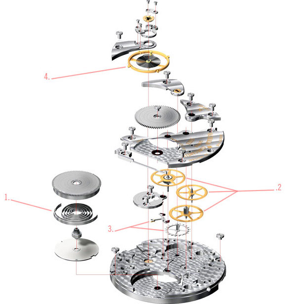

機械錶基本結構
究竟一枚機芯裡面會有哪些零件，這些零件有什麼樣作用和關聯，而又是如何把動能轉化成指針走時的推進力？
快速讀懂機械機芯構造

1. 發條盒 - 累積機械動能
藉由手動上鍊或自動上鍊機制捲動發條，在發條由緊到鬆的過程中由此釋放出扭力推動機芯零件。
2. 齒輪系 - 計數及傳遞能量
齒輪系跟面盤的時間控制顯示有關（模擬式通過指針，數字式則是透過視窗）。
套齒輪和小齒輪，其中一個發生運動可以令其他所有齒輪運動。齒輪系還會分成不同的類型，如上鍊齒輪系、報時傳動系等。
3. 擒縱系統 - 分割時間並進行能量分配
擒縱系統簡單來說是安裝在齒輪和調速機構之間的裝置。其功能是以規則的間隔暫停齒輪的運動，並向擺輪提供能量。
手錶擒縱系統的主要類型有以下：
- 後退式擒縱系統（機軸式或冠輪式）
- 直進式擒縱系統（工字輪型、單冕狀輪或雙冕狀輪）
- 自由式擒縱系統（槓桿式、掣子式）
其中槓桿式擒縱機構是迄今為止最常見的。高階一點的手錶會安裝比較少見的擒縱系統，通常是掣子或單鉤擒縱機構。而槓桿式擒縱系統非瑞士槓桿式莫屬，瑞士槓桿擒縱機構是如今最為廣泛使用的，因為它特別適用於手錶和精密計時器。
4. 擺輪及游絲 - 負責調速
通常要對手錶調速之前，必須進行以下操作：
- 對擺輪游絲進行固定、對中和修整
- 懸空擺輪
- 確定計數點
- 可能的話，繞製終端游絲
- 將擺輪固定至擺輪螺栓
實際的調速包括以不同姿態與不同溫度觀察手錶，並進行必要的調整。根據所需的精確程度，調速有著不同的級別：普通調速、不同姿態、不同溫度，精密調速等等。